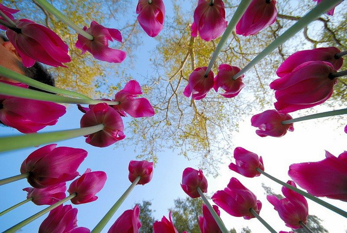
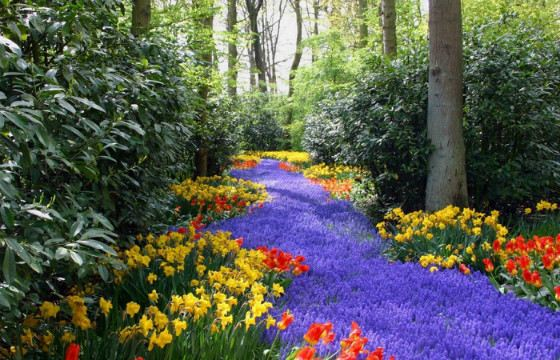

Цветок
Цвето́к (множ. цветки́, лат. flos, -oris, др.-греч. ἄνθος, -ου) — сложная система органов семенного размножения цветковых (покрытосеменных) растений.
Цветок представляет собой видоизменённый, укороченный и ограниченный в росте спороносный побег, приспособленный для образования спор и гамет, а также для проведения полового процесса, завершающегося образованием плода с семенами. Исключительная роль цветка как особой морфологической структуры связана с тем, что в нём полностью совмещены все процессы бесполого и полового размножения. От шишки голосеменных растений цветок отличается тем, что у него в результате опыления пыльца попадает на рыльце пестика, а не на семязачаток непосредственно, а при последующем половом процессе семязачатки у цветковых развиваются в семена внутри завязи.
Цветок, будучи уникальным образованием по своей природе и функциям, поразительно разнообразен по деталям строения, окраске и размерам. Самые мелкие цветки растений семейства Рясковые имеют в диаметре всего около 1 мм, в то же время как самый крупный цветок у раффлезии Арнольда (Rafflesia arnoldii) семейства Раффлезиевые, обитающей в тропических лесах на острове Суматра, достигает в диаметре 91 см и имеет массу около 11 кг.
Цветки бывают одиночными, но чаще группируются в соцветия.
10 самых красивых цветов
Цветы – самый красивый и простой способ передать свои эмоции и чувства. С этим согласятся многие. Ароматные и прекрасные – они способны поднять настроение буквально каждому, даже если букет дарят мужчине. Цветы способны вызвать ощущение счастья, снять стресс, даже уменьшить боль и помочь справиться с гневом.
Особенно эффективно такое необычное лекарство, если в ход идут самые красивые цветы в мире. И вот самые лучшие препараты: